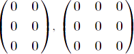
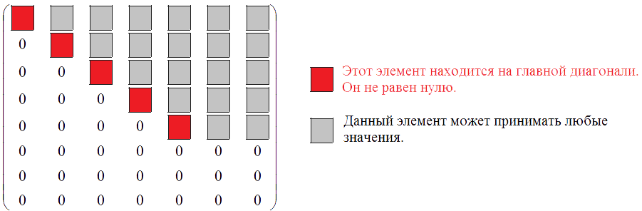
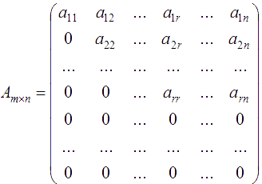
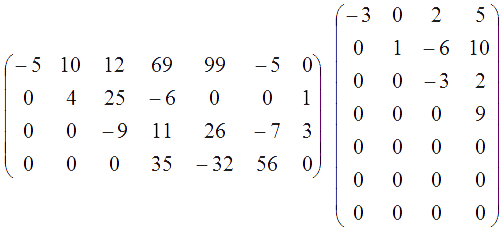
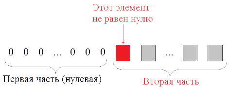
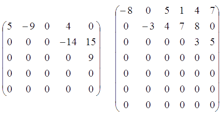
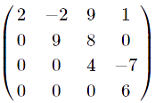
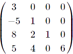
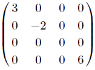
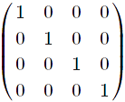

«Матрицы. Виды матриц. Основные термины.»
Если все элементы матрицы Am×n равны нулю, то такая матрица называется нулевой и обозначается обычно буквой O. Например,  - нулевые матрицы.
Пусть матрица Am×n имеет такой вид:

Тогда данную матрицу называют трапециевидной. на может и не содержать нулевых строк, но уж если они есть, то располагаются в низу матрицы. В более общем виде трапециевидную матрицу можно записать так:

Условия трапециевидных матриц.
- Все элементы, расположенные ниже главной диагонали, равны нулю.
- Все элементы от a11 до arr , лежащие на главной диагонали, не равны нулю: a11≠0, a22≠0, ... ,arr≠0
- Либо все элементы последних m−r строк равны нулю, либо m=r (т.е. нулевых строк нет вообще)
Примеры трапециевидных матриц.

Условия ступенчатых матриц.
Матрицу Am×n называют ступенчатой, если она удовлетворяет следующим условиям:
- Первый элемент первой строки не равен нулю, a11≠0.
- Каждая ненулевая строка (т.е. строка, которая содержит хоть один элемент, не равный нулю) состоит из двух частей: первая часть (нулевая) и вторая часть, которая начинается с ненулевого элемента:

- Из двух ненулевых строк та находится ниже, у которой нулевая часть больше.
- Нулевые строки могут располагаться только после ненулевых строк.
Пример ступенчатых матриц.

Условие верхней треугольной матрицы.
Если все элементы квадратной матрицы, расположенные под главной диагональю, равны нулю, то такую матрицу называют верхней треугольной матрицей.
Пример верхней треугольной матрицы.

Условие нижней треугольной матрицы.
Если все элементы квадратной матрицы, расположенные над главной диагональю, равны нулю, то такую матрицу называют нижней треугольной матрицей.
Пример нижней треугольной матрицы.

Условие диагональной матрицы.
Если все элементы этой матрицы, не лежащие на главной диагонали, равны нулю, то такую матрицу называют диагональной матрицей.
Пример диагональной матрицы.

Единичная диагональная матрица.
Диагональная матрица называется единичной, если все элементы этой матрицы, расположенные на главной диагонали, равны 1.
Пример единичной диагональной матрицы.
